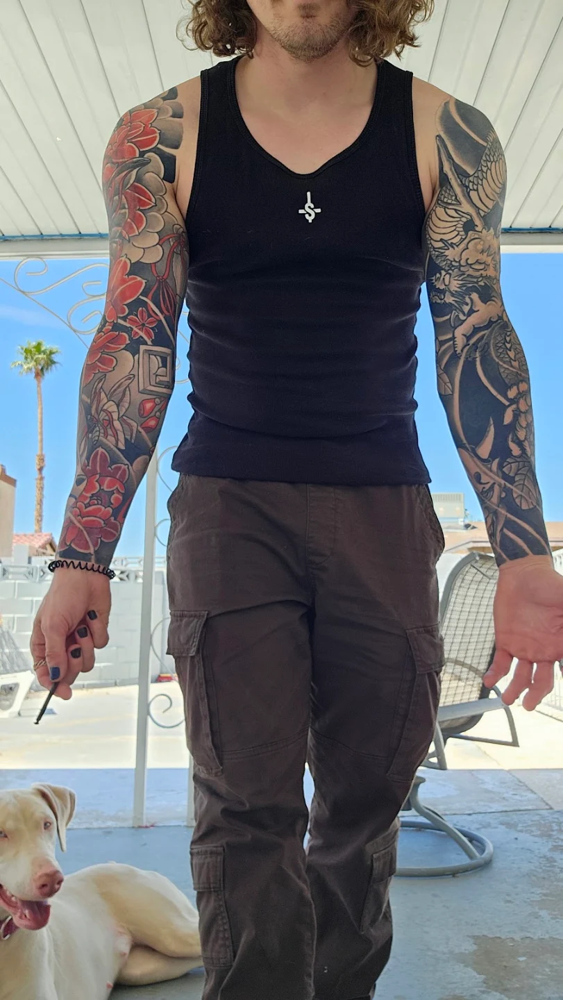

I had both of my sleeves done by Dylan and i can't be more happy with how each one has turned out beautiful and an absolute masterpiece of art! I am also looking forward to going back and getting more done by him and would recommend him to anyone thinking of getting a tattoo that they would admire and appreciate and is always becoming the topic of conversations.